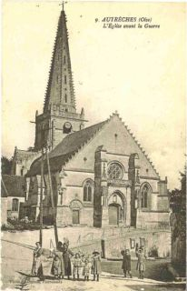
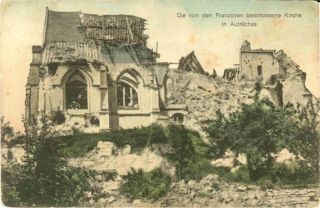
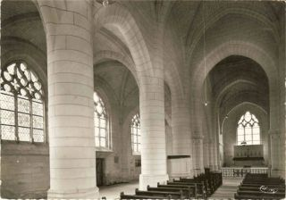
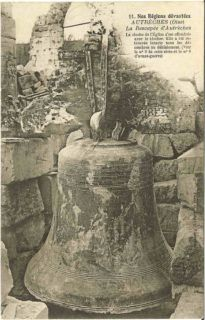

L'église :

Nous avons tous vu s’élancer haut dans le ciel et se découper nettement sur l’azur, l’élégante silhouette de notre clocher. Sa cloche nous a maintes fois sonné l’heure du travail, de la joie, de la douleur et du repos. Et, gamins insouciants et irrespectueux des choses du passé, nous avons souvent joué autour des murs de l’église, nous cachant derrière ses piliers, foulant sous nos pas les tombes séculaires où reposent, oubliées, les générations qui nous ont précédés.L’image de cet édifice nous était familière, nous aurions pu la désigner entre mille autres semblables, mais en raconter les nombreux détails, décrire ses beautés architecturales, reconnaître son origine, sont chose qui échappent à notre mémoire.
La guerre, qui a détruit cette œuvre d’art, ne laissant à notre œil que la vision de ruines délabrées, dressant des murailles déchiquetées, rassemblant en un monceau de pierre ce qui fut un joli monument, a contribué à estomper dans notre mémoire les détails qui la faisaient si belle à nos yeux.
Nous en aurions perdu les plus beaux souvenirs si Mr Goze, un archéologue distingué, doublé d’un historiographe éminent, passant un jour à Autrêches et frappé par la pureté des lignes de notre Église, n’avait entrepris et mené à bonne fin la description de cette merveille du XIIème siècle.
L’Église, ce témoin du passé où le temps seul avait mis sa patine, debout encore après huit siècle d’existence, a vu croître, prospérer, vivre, mourir et renaître notre Commune. Ce que la pluie, le vent, la neige ou la foudre n’avaient pu faire, les hommes, qu’un immense orgueil et un excès de civilisation avaient ramené à l’était primitif, ont abattu, par nécessité stratégique, l’Église huit fois centenaire.

Le clocher était un excellent poste d’observation ennemi, et les Allemands ne se faisaient pas faute de l’employer à la surveillance de nos lignes. Notre artillerie qui avait percé à plusieurs reprises le clocher l’a abattu en quelques coups de canon le 12 novembre 1914. Ce sont les batteries du 5e régiment d’artillerie, situées au-dessus de Berny-Rivière, qui l’ont détruit.

L’Église d’Autrêches est située au point culminant du village, sur une terrasse élevée, dont les murs sont soutenus par des piliers-boutants et forment comme l’emplacement d’un ancien château, ce qui ferait penser que cette Église, dédiée à un patron guerrier, Saint-Victor, a pu être castrale, c’est-à-dire dans la dépendance du château, ce que ferait encore pressentir les fondations qui y étaient attachées.Le portail paraît un peur lourd à cause de la grandeur du pignon de la toiture, laquelle est commune à la nef et aux collatéraux. Ce mauvais effet est racheté par la belle dentelle à trèfles renversés qui en parcourt les rampants.
La porte principale est en anse de panier, surmonté d’une ogive, avec accompagnement des festons trilobés, de moulures prismatiques, de pilastres pyramidaux garnis de crochets, de niches dans le style de la Renaissance, surtout aux piliers-boutants dont la saillie est forte ; la corniche composée de feuillage et d’animaux est en porte-à-faux sur les ogives tréflées en pendentifs.
Au-dessus de la balustrade élégamment découpée, est une rose flamboyante à huit divisions principales.
Le tympan du pignon, un peu nu, est percé de trois oculus munis d’un quatre-feuille arrondi.
Les parties latérales de la façade sont percées d’une fenêtre, flamboyante à droite et à gauche, d’un style qui se rapprocherait de celui du XIIIe siècle, comme les deux qu’on voit au transept du même côté.
A gauche, on admire une jolie porte dans le style de la Renaissance, avec pilastres à encadrements, losanges, rosaces sur le fût, chapiteaux formés par des cornes d’abondance, le tout surmonté d’un fronton circulaire ; dans le tympan est un écusson découpé et échancré, à la manière allemande, entouré d’arabesques entre deux candélabres et sommé de deux bars très habilement agencés ; le champ de l’écu est parti : à dextre, d’un lion rampant qui désignerait Bosebesq ou Bosbie, un des seigneurs d’Autrêches, vers le milieu du XVIe siècle ; et à senestre, du duché de Bar, peut-être à cause d'une alliance ou pour rappeler que les seigneurs d'Autrêches ont été châtelains de Bar-le -Duc ; sur le rampant du fronton sont des enroulements peu prononcés et au sommet une charmante niche.
Les piliers des extrémités de la façade contreboutent les murs diagonalement ; au bas de celui de gauche est une inscription malheureusement peu lisible qui relate une fondation pieuse. La beauté de la sculpture d'ornement de cette façade, fait vivement regretter la disparition des statues qui l'embellissaient.
Le long des murs de l’Église on lit encore quelques épitaphes curieuses, entre autres celle-ci, à droite :
ENTRE VOVS GENS DE BIEN
QVI PAR ICI PASSEZ, PRIEZ
DIEV POVR LES TRÉPASSÉS.
1609
_____________________________________
CY DEVANT GIST HONNEST
PERSONNE Me PIERRE LE
MEMENTO MERCER, EN SON VIVANT NOT. RESCIPE
MORI. ROIAL, QVI DECEDA LE FINEM.
22 JVILLET 1646. PRIEZ
DIEV POVR SON AME.
Des têtes de mort, figurées au-dessus des sentences latines, en facilitent
l'intelligence.
Au mur latéral gauche on aperçoit quelques statuettes d’anges qui ont dû faire
partie d’un sujet religieux mutilé en 1781, par la construction d’une sacristie.
Quelques réparations ont altéré le style des extrémités de l’Église qui peuvent
dater du XIIIe siècle.
La belle dentelle de la façade règne sur les pignons des transepts et les
rampants des quatre arcs-boutants qui flanquent le clocher.
Ce dernier morceau fait la gloire du pays ; il l’emporte sur tous les clochers
des environs, même celui de Hautefontaine qui n'est pas aussi élégamment décoré. Il commence par une tour carrée, assise sur la croisée de l’Église,
percée de quatre ouïes ogivales, autrefois décorées de festons, cantonnée à ses
angles de pinacles à crochets, surmontée d'une riche balustrade avec gargouilles et obélisques très simples sur les acrotères.
Sur la terrasse s’élève, dans les nues, une magnifique pyramide octogone en
pierre, protée dans l’intérieur sur un encorbellement gradué en quart de rond et
ayant à peine seize centimètre d’épaisseur, elle monte à plus de vingt mètres.
Sa base est décorée d’arcades feintes en ogives tréflées, ses faces sont percées
d’ouvertures tréflées, alternativement allongées et arrondies ; les parties nues
sont découpées en petits cintres qui simulent des écailles, chaque angle est
garni de trente-deux crochets formés de feuillages enroulés.
Ce beau clocher est la copie exacte de la tour de droite de l’ancienne Église
abbatiale de Saint-Jean-des-Vignes de Soissons, construite vers 1520. Il fallait
un grand zèle religieux et un vif amour des arts pour doter un modeste village
d’un pareil monument.
La cloche :

Son diamètre est de 1 mètre 12 centimètres, sa hauteur 96 centimètres, son poids 900 kilogrammes Elle porte cette inscription « L’an 1662, je fus bénite par Me François Lebrassseur, doyen-chanoine de l’Eglise collégiale et paroissiale de Nostre Dame des Vignes de Soissons, licencié ès droicts et nommée Louise-Anne par Mgr Louis Gédoyn, conseiller du Roy, receveur général des finances à Soissons et par Dame Anne-Marie de Gonnelieu, vicomtesse de Pernant, Autrêches, épouse de M ; Richard Gédoyn, chevr. Cy-devant cappne. D’une compagnie de chevaux-légers dans le régiment du Roy, vivant pour lors Me Philippe Lebrasseur, bachelier ès droicts, cy-devant curé de Saint-Martin de Soissons et curé de celui d’Autrêches. Liènard, Lebossu, Margr. «
La cloche a perdu ses deux sœurs avec lesquelles elle formait un accord
harmonieux, avant 1793. Sur sa robe sont mentionnées des alliances des seigneurs
d’Autrêches et figurent les armes des Gonnelieu et des Gédoyn.
L’intérieur de l’Eglise d’Autrêches est d’un style simple et grave ; les piliers
ronds, à bases octogones, sont sans chapiteaux, les voûtes d’arête, à nervures
anguleuses, règnent dans toute l’étendue de l’Église ; les piliers qui portent
le clocher ont été renforcés après leur construction.
On distingue encore des têtes dans les angles et un corniche en branche de chêne
dont les glands sont dévorés par des pourceaux.
La voûte est double à l’endroit du clocher, le chœur est terminé carrément. Les
clés de voûtes et des consoles sont dans le style de la Renaissance. On lit, à
droite, une date de 1541 qui pourrait être celle des plus grands embellissements
de l’Église et en particulier du clocher.
La plupart des fenêtres sont en style flamboyant très riche, bi et tripartites
ayant beaucoup de ressemblance avec celles de l’Église de Saint-Germain
d’Amiens. On y aperçoit quelques vestiges de peinture sur verre, des restes
d’inscription, d’une figure de la vierge, de bordures à arabesques d’or,
d’armoiries, dont une est fascée et ondée d’argent et de gueules, etc...
A la
voûte de la chapelle terminale de gauche est un
écusson
qui serait écartelé au 1 et 4 de Hennin-Bossut, au 2 et 3 parti de Béthune et de
Coucy. Aux environs est une sculpture en bois faisant partie d’une descente de
croix qui ornait le principal autel de la crypte.
Les tempêtes révolutionnaires ont enlevé la décoration et les ornements de l’Église
qui devaient être en rapport avec sa belle structure ; on regrette des fonds
baptismaux armoriés, brisés par un maçon qui en refit plus tard d’autres d’un
style trivial.
Au-devant du chœur est une pierre tombale bleue malheureusement effacée en
partie ; on y distingue encore le nom d’un « Gonnelieu, seigneur de Chevillecourt,
Autresches, mort en 1572 ».
Une crypte s’étend sous tout le chœur et les transepts, on y descend par deux
escaliers de 16 marches placés à chaque extrémité des bas-côtés. Les voûtes d’arète
de cette crypte sont surbaissées et reposent sur des colonnes courtes engagées.
Le style est en partie roman, en partie flamboyant ; une porte à droite est en
accolade, ainsi qu’une niche de crédence ; de ce côté est un chapiteau très
curieux représentant un archer tirant sur un oiseau perché sur un arbre. Sa
coiffure ressemble à un bonnet phrygien, sa flèche est terminée par une masse
triangulaire qui, d’après M. de Courval de Pinon, est un carreau.
A gauche, on remarque la même corniche que nous avons mentionnée dans l’Église,
elle est également en chêne englandé et accompagnée du même accessoire. Six
soupiraux fortement ébrasés à l’intérieur percent les murs.
A droite est une pierre tombale, avec cette inscription :
CI GÎT
CHARLES-GILLES-MARIE, COMTE DE LOUVEL
ANCIEN OFFICIER SUPÉRIEUR DE CAVALERIE,
NE EN 1735,
ET DECEDE LE 3 Xbre 1818
Le fond de la crypte se termine par trois absides qui varient de forme ; celle
de gauche est à trois pans, celle de droite est arrondie en cul de four, et la
centrale à quatre pans, présente un angle rentrant dans le fond.
Ces apsides enferment trois autels en pierre composés d’un piédestal carré
portant une table saillante, creusée d’une gorge en dessous.
A ces autels étaient affectés des bénéfices, sous le nom de canonicats ou prestimonies dont le revenu était assigné sur le domaine de Noyon, sous l'invocation de Notre-Dame-Des-Croutes ou Cryptes. Deux de ces bénéfices étaient à la collation du chapitre de la cathédrale de Soissons et une à celle de l’évêque ; cette dernière était attachée à la cure d’Autrèches ; elles valaient de revenu 31 livres 5 sous ; la chapelle rapportait 25 livres et le restant de 6 livres 5 sous était annexé à la cure. Il y en avait en outre deux chapelains qui recevaient 15 livres de revenu ; les charges étaient de douze messes dans l’église d’Autrèches. Ces canonicats ont été réunis aux bourses du collège de Soissons en 1763. Le chapitre de Saint-Gervais de Soissons présentait à la cure d’Autrèches qui fut donnée, vers 1151, à l’abbaye de Longpont par Ancoul de Pierrefonds, évêque de Soissons.
La chapelle d’une ancienne maladrerie subsista longtemps au nord du territoire
d’Autrèches ; sur la fin du XVIIe siècle, ses revenus ont été fondus dans ceux
de l’Hôtel-Dieu de Soissons qui a possédé une ferme dans le pays.
M. graves qui nous a fourni de bons renseignements, rapporte qu’on a découvert,
en 1835, des sarcophages sur le chemin d’Autrèches à Morsain, au lieu dit la
Cavette. On y a également trouvé les restes de nombreuses fondations vers
Chevillecourt ; c’est sans doute ce qui aura fait dire qu’Autrèches qui ne
compte aujourd’hui que 671 habitants, a été autrefois une ville assez
importante.
On voit dans un bois, à l’est du village, un grès en vénération dans le pays
sous le nom de la
pierre de Saint-Martin ; il retient, dit-on, l’empreinte du pied et du genou
de ce saint, d’après une légende de la localité.
La ferme de Tillolet, sur le territoire d’Autrèches, appartenait à l’abbaye d’Ourscamps.
Beaucoup d’antiquaires auront exploité le Soissonnais et le Valois, sans
remarquer Autrèches et sa belle église.
En 1776 eut lieu le transfert des reliques de Saint-Victor de leur ancienne
châsse dans une nouvelle ; voici que relatent les registres de la paroisse.
« Le dimanche 21 juillet, le sieur Pierre-Antoine Roussel, prêtre-chanoine de
l’Eglise cathédrale de Soissons, promoteur général du diocèse, commis par Mgr
Henry-Joseph-Claude de Bourseilles, évêque de Soissons, suivant son ordonnance
en date du 18 de ce mois, a béni dans l’Eglise deux châsses de bois doré dans
l’une desquelles il a transféré les reliques de Saint-Victor de leur ancienne
châsse, et, dans l’autre, a mis des reliques du Pape Saint Pie V et de
Saint-François de Sales et de Sainte-Jeanne-Françoise Frémiot de Chantal, avec
les « authentiques » des dites reliques et les procès-verbaux de ladite
translation et de l’autorité de mondit seigneur évêque a permis de les exposer à
la vénération des fidèles, tant de la fête des saintes reliques, qu’aux
dimanches les plus prochains du jour de la fête de chacun desdits saints et
sainte et a signé avec moi curé de cette paroisse ; Roussel, Le Tonnelier, curé
».
Une certaine quantité de personnes ont été inhumées dans l’Eglise d’Autrêches,
en voici la liste :
1637 : Antoinnette Huguet, sœur du curé Robert Huguet, originaire de
Villers-Cotterêts
1650 : Pierre Bourgain, vicaire d’Autrêches, originaire de « Bonneuille » près
de Villers-Cotterêts
1754 : Houillier, Marie-Madeleine, enterrée au bas de l’Église, du côté gauche,
proche du bénitier, mère du curé Roussel
1755 : Randon Antoine-Armand, tisserant à Massenancourt et chantre de l’Eglise
d’Autrêches, enterré au pied du bénitier de la porte d’Autrêches
1762 : Barbier-Roussel Gabriel, neveu du curé Roussel
1675 : Antoinette Maudoy, femme Blondeau (institutrice)
1676 : Jean Blondeau (instituteur), clercq de l’Eglise Monseigneur Saint-Victor
d’Autrêches
1636 : Elie Delahaye, de Soissons, mort à Autrêches, en revenant de l’armée
1637 : Nicolas Lecoq
1638 : Gilles Lefébure
Charles
Pressoir
Blanche
Faucher
1639 : Catherine de Noyel, femme de Gabriel le Bossu
Jean de
Caudrellier, commissaire de l’artillerie du Roy
1642 : Pasquier Désiry
1644 : Louis Bouzier
1645 : Victor Sauvage, canonnier de l’artillerie
Anthoine
Vincent, sergent royal
Nicolas de la
Planque
Nicolas
Destrées
1648 : Nicolas Bouzier
1650 : Marie Dofémont
1652 : Jean Delespine, procureur fiscal, enterré devant le crucifix
1653 : Jean Lecoq
Pierre
Bouzier
Jeanne
Lebossa
1669 : Madeleine Clément, femme de Nicolas Le Bossu :
Nicolas Le
Bossu, laboureur
Gabriel Le
Bossu, lieutenant de la justice d’Aultresche
1670 : Jacques Desjardins, maître-chirurgien et lieutenant de la justice d’Aultresche
1675 : Crépine Dortu
Jeanne Lecoq
1767 : Léonard Tribalet
1679 : Marie Vuallier
Noêl
Desjardins
René Clément
1680 : Jeanne Gobin
Marie-Françoise Leclère
Jean Durand
1683 : Gabriel Ducastel, marguillier
1684 : Flourence Erasin
Catherine
Messence
1687 : Liénard Le Bossu
1694 : Jean Lecoq, vigneron
1695 : Anne Dupuis
Marguerite
Guilbert et son fils
Nicole Lecoq
1701 : Marie Vuaroquier
1710 : Henriette-Mélanie-Valentine-Charlotte-Victoire des Essarts
1716 : Marie Pinson
1717 : Anne de Gonnelieu, veuve de Richard de Gédoyn, dame de Pernant et
cy-devant dame d’Autresche, 80 ans
1718 : Henry-Charles de La Fontaine, chevalier, seigneur et vicomte d’Autrêches,
Iviez, Bitry et autres lieux, 65 ans, inhumé dans la chapelle de la Vierge.
CURES DESSERVANTS
1590 Pierre Roussel, curé
1590/93 Jehan Lombart, prêtre-vicaire
1593/94 Anthoine Dortie, prêtre-vicaire
1601/32 Adrien Sarrazin, curé
1632/34 Pignon, vicaire
1634/50 Robert Huguet
1650/51 Pierre Bourgain, vicaire
1651/52 Robert Huguet
1651 P. Lebrasseur
s’intitule curé d’Autrêches
1668 François Brodin,
prêtre-chanoine de Berzy et vicaire d’Autrêches
1670 Philippe Lebrasseur
s’intitule « prestre-curé d’Aultreche et doyen de Vissuraixne, eslu par MM. Les
curés dudit doyenné, le 30 octobre 1660, bachelier es droits en l’Université de
Paris »
1683 Charpentier, vicaire
1687 Gilles Fillion,
prêtre prieur de Bellefontaine fait quelques baptêmes
1693 Fleury, sans doute
vicaire de Lebrasseur, signe les actes d’état civil
1694/96 Lebrasseur signe à nouveau les actes
1695 Anthoine Levesque,
prêtre-vicaire, signe beaucoup d’actes
1696 Nicolas Maruy, pr^tre-vicaire
1705 Enterrement au
cimetière de Gilles Fillion, prêtre
1711 Décès du prêtre Maruy,
enterré dans le cimetière ; le doyen Desmonceaux de Vissuraixne, fait l’intérim
de même que le R.P. Séverin de Ham, capucin du couent de Soissons .
1712 Pierre Girard, qui
est remplacé pendant ses absences par le R.P. Casteau, religieux, prêtre
cordelier
1718 R.P. Vincent de
Coulogne, capucin du couvent de Soissons remplace le curé d’Autrêches pendant sa
maladie
1722 Nicols Lebreton,
vicaire signe les actes
1727 J.- B. Henry, vicaire
d’Autrêches
1743 Girard, curé ;
Dechaumont, curé de Moulin ;
Frère Ambroise de Cambray, prêtre-capucin au couvent de Soissons
Pierre-Antoine Roussel
1758 Le curé Roussel, d’Aultresche,
est devenu doyen de Vic
1763 R.P. Jean de
Saint-François Boucher, prêtre-religieux, profès de l’ordre des Feuillants, de
la maison de Blérancourt.
1764 Leclerc, vicaire
1766 Nusse, vicaire
Venet, vicaire
1767 Duval, vicaire
Charles Wallet, vicaire
1769 Rigault, vicaire
1770 Le Tonnelier, curé
1782 Louis Claudon, curé
1784 Quequet,
prêtre-vicaire
1785 Gallet, viacaire
1791 Louis-Isidore Warnier,
curé
1792 Warnier, curé est
officier public. En 1703 dans un acte de baptême, il est qualifié : membre du
Conseil général d’Autrêches, élu le 22 décembre 1792 pour dresser les actes
destinés à constater les naissances, mariages et décès des citoyens. Il est
remplacé par Gervais-Auguste Messence, membre du Conseil Général de la commune
d’Autrêches, élu le 24 Brumaire, an II, comme officier public.
Il nous est impossible de donner la nomenclature des prêtres qui se sont
succédés dans notre commune et ce par la mauvaise volonté évidente du
Secrétariat de l’Evéche de Beauvais. Ce service ecclésiastique n’a répondu aux
demandes qu nous lui avions adressées que par ces mots « impossible, travail
trop considérable ».